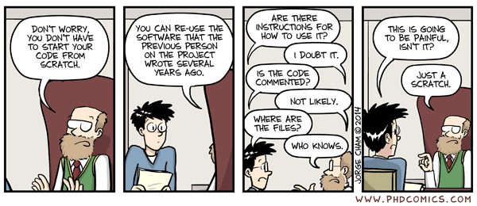
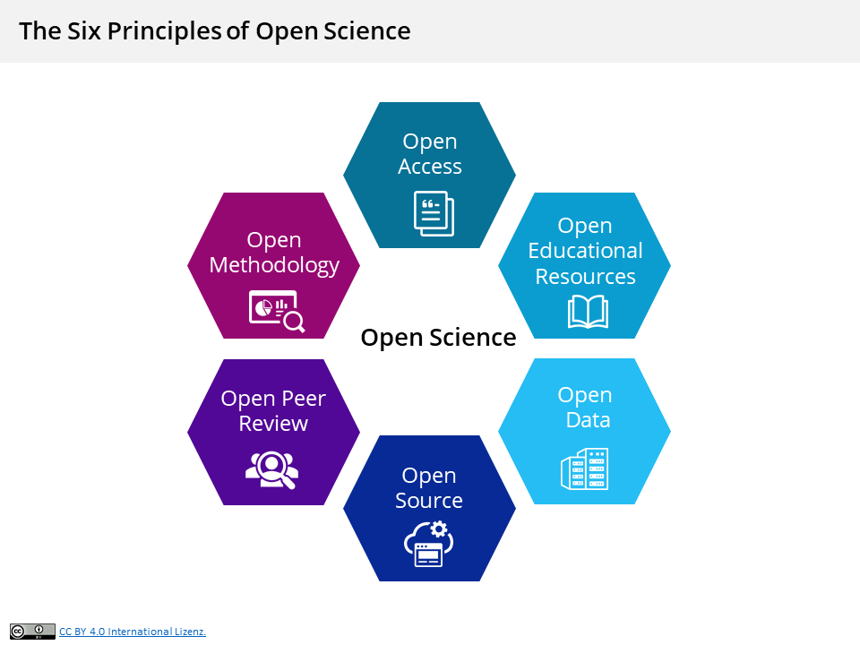

# This is a code chunk!Week 2: Intro to R
Introduction to R/RStudio
Why Computer Programming?
As scientists, our goal should not only be to contribute to knowledge but also to share our findings transparently to facilitate thorough peer review and ensure that others can build upon our work.
Computer programming can help us achieve these goals effectively by facilitating computational reproducibility and contributing to Open Science.
Computational reproducibility means that all of data processing, analysis, and visualization can be entirely and independently recreated, yielding the exact same outputs. This is particularly important for ensuring the reliability of research, making it easier to verify findings.

Having a clear record of every step taken to process, analyze, and visualize data is necessary for computational reproducibility. Using computer programming instead of “point-and-click” software helps ensure that every step can be recreated.
Computational reproducibility is a large component of Open Science, a movement to make research practices, data, methods, and results accessible to everyone. It promotes transparency and collaboration by sharing not just conclusions but the entire process that led to them.

Open Science has numerous components, as you can see in the figure above. In this class, we are focusing primarily on open data, open methodology, and open source software.
- Using interoperable file types (e.g., CSV files) is an important part of making data openly available.
- Using open-source software for analyses instead of expensive statistical programs (which are often point-and-click) is an important part of making science transparent and accessible.
What’s What: R vs. RStudio vs. Posit Cloud
What is R?
- Programming language and software
- Started as a statistics and data analysis environment, but it can also build websites, run simulations, and many other things
- R is what runs all of the code we will write this semester
- R is open source, meaning it is free, non-proprietary (not owned by a company), and reproducible. This also means that anyone can contribute to it!
- Separate from RStudio
What is RStudio?
- IDE - Integrated Development Environment
- Makes developing code in R easier by including a number of tools in one place
- Created by a company that is now called Posit
What is Posit Cloud?
- An online version of RStudio that runs in your browser
- We’re using it because it:
- Avoids installation difficulties
- Makes sharing code with instructors for debugging easier
- Leaves some of the complexities of working with R until after we’ve learned the basics
- We will switch to using RStudio on our own computers in the second half of the semester.
Rstudio Mini-Tour
What do all of these panels do?
Let’s explore each of the panels in RStudio. They are all useful in their own way!
Source (upper left): This is where documents which have data or code in them are opened. You can save all the code you type here for future (re)use, which is a big reason coding in R is reproducible.
Console (bottom left): This is where code from the source is “run” and you see the outputs. You can also execute lines of code which you type into the console, but they will not be saved. You can think of this section as where RStudio really interfaces with R–it is where R actually evaluates code within RStudio.
Environment (upper right): This panel becomes more helpful as you get familiar with R and RStudio. It keeps track of data objects and other items you have created and gives a bit of information about them.
Files/Help/etc. (bottom right): This panel is (clearly) very multifaceted. The Files tab lets you see all the files in your current workspace. For us, the Help tab is probably what we will use the most. This is where we can search the R documentation for information about functions we use.
File Types with R Code
Through your experiences using R, you will likely encounter a number of different types of files that contain R code. The two most common are R scripts and RMarkdown files.
An R script is a plain text file where you write and run R code line by line. R scripts are purely code-based and don’t include formatted documentation for sharing or presenting results. These documents end with .R.
In this class, we will be using RMarkdown files (they end with .Rmd). RMarkdown combines R code with formatted text, allowing you to create dynamic, reproducible documents. This is called “literate programming.”
RMarkdown is a great option for everyday coding but also for creating reports, presentations, or even academic papers. You can integrate explanations, equations, and visualizations alongside your code, and then export the output to formats like HTML, PDF, or Word.
In fact, you will be submitting most of your remaining assignments as PDF files.
Intro to Coding in R
Basic Expressions (R as a Calculator)
Let’s start by typing an expression in the console (below).
Try multiplying 5 and 3 in the Console (hint: * means multiply). Hit Enter to run that line of code.
RMarkdown and Code Chunks
RMarkdown (.Rmd) is a file format that lets us incorporate text and code into one document seamlessly. In fact, it is the file format for this document!
- For writing text, you can type as you normally would.
- Code chunks are a bit different:
- Near the top right of your screen you can toggle between viewing this document as under Source or Visual.
- If you view this document under
Sourcemode, you will see that all code chunks are sandwiched between an opening line of code with 3 backticks and{r}and a closing line of code with 3 more backticks. - In
Visualmode, however, you can type R code in the lines under{r}. - To include text in chunks, you will need to put a
#in front. R will not read anything in the line after#as code. - Commenting your code is considered best practice. Not only does it help other people understand what your code is doing, but it will help you remember what your code is doing and why!
Code chunks look like this:
To run a chunk of code, click the green arrow on the top right corner of the chunk.
You can also run one or a few lines of code at a time by having your cursor on the line or highlighting multiple lines and hitting Ctrl + Enter (or Cmd + Enter on a Mac).
A quick shortcut for adding a code chunk is Ctrl + Alt + i (Cmd + Opt + i on a Mac). Alternatively, you can go to Code > Insert Chunk.
Some Code Chunk Practice
Let’s work with an example code chunk.
# convert grams to kg
50 / 1000 * 2.2[1] 0.11Assigning Objects (Creating Variables)
Assignments are really key to almost everything we do in R. This is how we create permanence in R. Anything can be saved to an object, and we do this with the assignment operator, <-.
The short-cut for <- is Alt + - (or Option + - on a Mac)
Note: You can technically use either <- or =. I recommend getting used to <-, as this is standard practice (now) in R and recommended in style guides. The reasons why are complicated and don’t often arise in most situations, but it is still good practice.
weight_g <- 50We can see that this object has been created by looking in the Environment tab.
Objects works just like the value itself. For example, we can use them in mathematical expression.
weight_g / 1000[1] 0.05weight_g / 1000 * 2.2[1] 0.11weight_lb <- weight_g / 1000 * 2.2The object won’t change unless you assign a new value to it directly using the assignment operator (<-).
weight_g[1] 50weight_g * 2[1] 100weight_g[1] 50weight_g <- 26
weight_g[1] 26Some RStudio Tips
Use thetab key to autocomplete objects (and other things)
- Let the computer do repetitious work.
- It’s easier and causes fewer mistakes.
Also, you can see the commands you’ve run under History in case you forgot to write something down in your Source code.
Let’s Practice
Head over to this week’s assignment. It is already in this Posit Cloud project, so you can find it in the Files tab. I recommend clicking over into Visual mode.
Start working on Exercises 1 and 2 in the Assignment. Remember to comment your code as you go!
Functions
Functions are pre-written bits of codes that perform specific tasks for us. Effectively, they are complex expressions rather than “basic” ones.
A function call consists of two main parts.
- First, the name of the function, followed by parentheses.
- Next, the arguments that the function requires to perform its task. Anything you type into the parentheses are arguments.
For example:
sqrt(49)[1] 7Here,sqrt() is the name of the function, and 49 is the argument.
We can also pass objects as the argument in functions.
weight_lb <- 0.11
sqrt(weight_lb)[1] 0.3316625Data Types
Another useful function is str(), which is short for “structure.”
It will tell us information about the dimensions and data type of an object.
# numeric
str(weight_lb) num 0.11Another data type is for text data. We write text inside of quotation marks.
"hello"[1] "hello"If we look at the structure of some text we see that it is type “character.”
str("hello world") chr "hello world"Many functions can take multiple arguments. For example, let’s use a function to round weight_lb to one decimal place.
round(weight_lb, 1)[1] 0.1Functions return values, so as with other values and expressions, if we don’t save the output of a function then there is no way to access it later.
It is common to forget this when dealing with functions and expect the function to have changed the value of the variable. However, if we look at weight_lb, we see that it hasn’t been rounded.
weight_lb[1] 0.11To save the output of a function we assign it to a variable.
weight_rounded <- round(weight_lb, 1)
weight_rounded[1] 0.1Let’s Practice
Start working on Exercises 4 and 5.